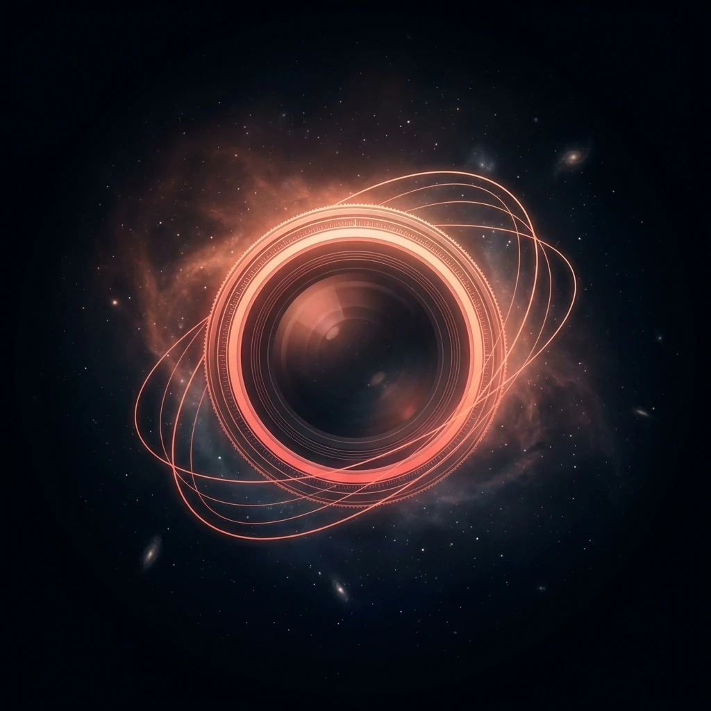
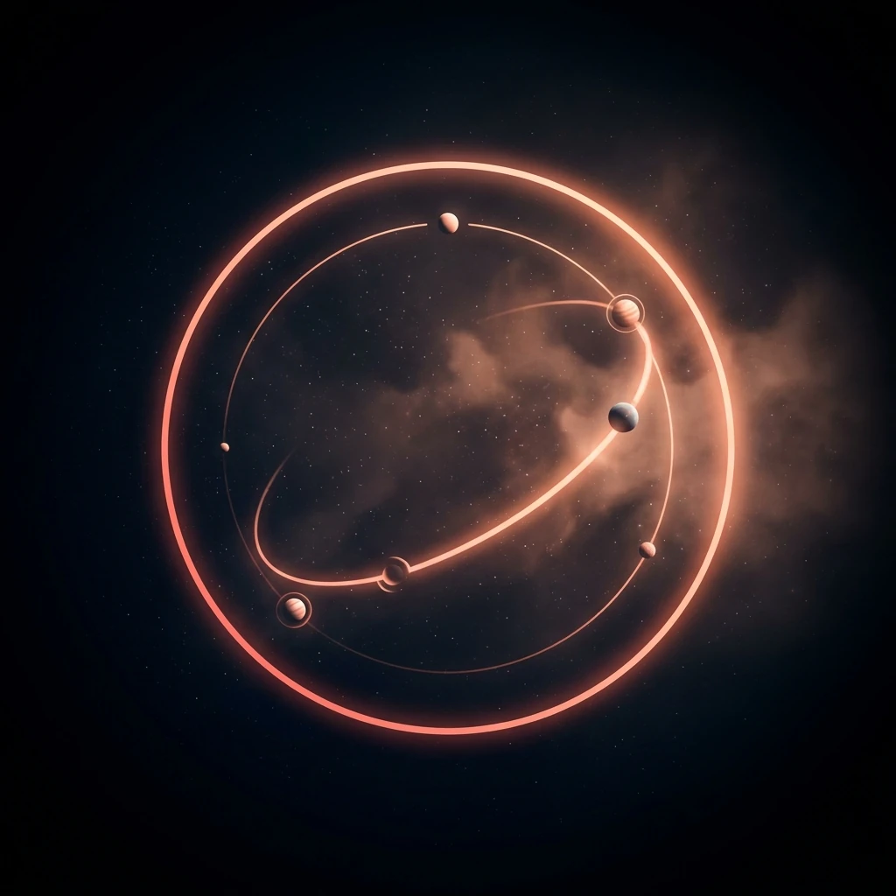

01 / 04 · Observe
We look before we leap.
Your audience, your market, your edge — mapped in full before a single pixel is drawn. We build on what's real, not what's assumed.

Your audience, your market, your edge — mapped in full before a single pixel is drawn. We build on what's real, not what's assumed.

Everything we learn becomes a point of view — the positioning, the structure, and the story your site is going to tell.
Design, words, and motion — chosen on purpose, not by default. Nothing ships by accident.
We ship the site, then measure how it performs and refine from there. Launch is the start, not the finish.
Fast, custom-coded websites built to last — no page builders, no bloat, no shortcuts.
Explore Development →Identity and interfaces with a point of view — atmospheric, deliberate, unmistakably yours.
Explore Design →The work doesn't stop at launch — we help the right people find you and stay.
Explore Marketing →